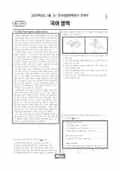

문제지

시험지 만들기준비하고 있어요. 열리면 아래 탭에서 바로 쓸 수 있어요.
전국연합학력평가 · 시·도교육청 주관
2025년 3월 고1 학력평가 국어 1등급컷은 원점수 84점(추정), 표준점수 최고점은 153점입니다.
원점수 1등급컷은 공식 발표값이 아니라 EBSi·입시기관 값입니다. 등급별 값은 등급컷 표, 출처 구분은 데이터 원칙에 있습니다.

| 등급 | 표준점수 이상 | 인원(명) | 비율 |
|---|---|---|---|
| 1 | 135 | 14,336 | 4.03% |
| 2 | 126 | 24,819 | 6.98% |
| 3 | 116 | 44,960 | 12.65% |
| 4 | 106 | 59,335 | 16.7% |
| 5 | 95 | 72,908 | 20.52% |
| 6 | 85 | 58,833 | 16.56% |
| 7 | 74 | 41,907 | 11.79% |
| 8 | 64 | 25,696 | 7.23% |
| 9 | 41 | 12,545 | 3.53% |
시·도교육청 공개 자료
출처: 시·도교육청이 공개한 전국연합학력평가 성적 분석·통계자료(공개 자료 보기).
EBSi 응답자 기준으로 가장 많이 틀린 문항은 20번(2점)이고, 오답률은 83.8%입니다. 상위 15문항 중 3문항은 정답보다 한 오답을 고른 사람이 더 많았습니다(20번: 정답 ② 16.2%, ④ 34.6%). 오답률 50%를 넘은 문항은 12개입니다.
| 순위 | 문항 | 배점 | 오답률 | 정답 | 많이 고른 오답 |
|---|---|---|---|---|---|
| 1 | 20번 | 2점 | 83.8% | ② | ④ 34.6% |
| 2 | 45번 | 3점 | 70.7% | ④ | ⑤ 23.9% |
| 3 | 33번 | 3점 | 70.7% | ④ | ⑤ 31.2% |
| 4 | 40번 | 2점 | 69.6% | ③ | ④ 41.3% |
| 5 | 44번 | 2점 | 68.3% | ② | ④ 27.7% |
| 6 | 23번 | 2점 | 65.2% | ① | ③ 33.3% |
| 7 | 43번 | 2점 | 59% | ② | ③ 22.6% |
| 8 | 24번 | 2점 | 57.7% | ① | ⑤ 24.3% |
| 9 | 8번 | 2점 | 56.4% | ③ | ④ 30.8% |
| 10 | 37번 | 3점 | 54.4% | ④ | ③ 21.1% |
| 11 | 32번 | 2점 | 53.8% | ⑤ | ③ 24% |
| 12 | 35번 | 2점 | 50.4% | ③ | ④ 21.1% |
| 13 | 29번 | 3점 | 47.1% | ② | ④ 30% |
| 14 | 18번 | 3점 | 43.7% | ⑤ | ② 19.2% |
| 15 | 39번 | 2점 | 43.6% | ① | ⑤ 14.1% |
EBSi 가채점 응답자 기준 · 전 문항 중 오답률 상위 15문항
출처: EBSi 역대 등급컷·오답률 공개 화면. 가채점에 참여한 EBSi 이용자 응답이라 전체 응시자 정답률과는 다를 수 있습니다.
발행 기관: 시·도교육청(전국연합학력평가). 파일 위치: 이 사이트가 보관한 사본. 저작권은 발행 기관에 있습니다. 원본과 다르거나 게시 중단이 필요하면 연락처로 알려 주세요. 등급컷 출처 구분은 데이터 원칙에서 설명합니다.
막대 색은 역대 대비 난이도 · 진한 막대가 이 시험 · 막대를 누르면 그 회차로 이동
| 회차 | 1등급컷 | 표점 최고 | 1등급 표점 | 난이도 |
|---|---|---|---|---|
| 3월 학평2025년 고1이 시험 | 84 | 153 | 135 | 쉬움 |
| 10월 학평2024년 고1 | 89 | 145 | 136 | 어려움 |
| 9월 학평2024년 고1 | 87 | 148 | 136 | 어려움 |
| 6월 학평2024년 고1 | 87 | 146 | 134 | 보통 |
| 3월 학평2024년 고1 | 91 | 141 | 131 | 매우 쉬움 |
| 9월 학평2023년 고1 | 84 | 150 | 135 | 매우 어려움 |
| 6월 학평2023년 고1 | 87 | 149 | 136 | 보통 |
| 3월 학평2023년 고1 | 95 | 136 | 131 | 매우 쉬움 |
| 11월 학평2022년 고1 | 88 | 145 | 134 | 보통 |
| 9월 학평2022년 고1 | 82 | 155 | 136 | 매우 어려움 |
국어는 교육청 채점 결과 1등급 구분 표준점수가 135점, 최고점이 153점(81명)이었습니다. 1년 전 3월 고1(1등급 131점, 최고점 141점)보다 크게 어려웠고, EBSi 가채점 응답자 기준 오답률 50%를 넘은 문항이 12개였습니다.
16~21번은 공리를 극대화하는 최대 행복의 원리를 중시한 공리주의와 밀(가), 인간을 효용을 극대화하는 합리적 존재로 본 경제학자들의 효용 이론(나)을 엮은 지문입니다. 가장 많이 틀린 20번(2점, 83.8%)은 기부의 경제학 실험을 다룬 <보기>를 밀과 경제학자의 입장에서 이해하는 문항으로 응답의 34.6%가 같은 오답(4번)을 골랐습니다.
30~33번은 서식 환경에 따라 광합성 효율이 달라지는 까닭을 C3 식물과 C4 식물로 설명한 지문으로, 두 식물의 광합성 과정 그림 a~c를 해석하는 33번(3점, 70.7%)이 어려웠습니다. 34~38번은 국가와 범죄자의 관계를 규율하는 형사법과 개인 사이를 규율하는 민사법을 다룬 지문이었습니다.
문학은 장돌뱅이로 나선 황씨가 나오는 이문구 「암소」(22~25번), 기차에서 여름 들판을 바라보는 나희덕 「연두에 울다」와 아내도 집도 잃고 헤매는 화자의 백석 「남신의주 유동 박시봉방」(26~29번), 윤선도 「만흥」과 홍석주 「전간대」(39~42번), 남만국에 잡힌 아버지 서경을 찾아 나선 서천흥의 「쌍주기연」(43~45번)이었습니다.
「쌍주기연」을 천자 중심의 위계질서 회복으로 읽는 <보기>의 45번(70.7%), [A]와 [B]를 비교하는 44번(68.3%), 「만흥」과 「전간대」의 ㉠, ㉡을 이해하는 40번(69.6%)이 어려웠고 40번은 응답의 41.3%가 같은 오답(4번)을 골랐습니다. 화법·작문은 종이비행기 날리기 세계 대회를 다룬 발표(1~3번), 학생 고민 상담 글을 쓰는 동아리 회의(4~7번), 이사를 준비하다 엄마가 적어 둔 자신의 성장 일지를 발견한 경험을 쓴 글(8~10번)이었습니다.